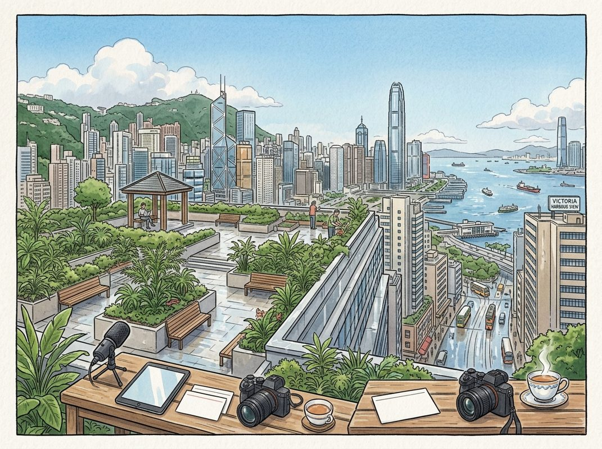

8/25

播客简报 2026-08-25
今日更新
Michael Kratsios: Trump's Science Agenda, Anti-Science Claims, Fauci's Damage, DEI & China
来源：All-In with Chamath, Jason, Sacks & Friedberg
状态：未读全文：需要音频转写
材料不足：这期需要 transcript 或更完整正文后再做全篇摘要。
- 当前只有节目简介或网页正文；这是播客音频，必须获取 transcript 后才算读完整期。
How to Improve Motivation & Overcome Procrastination | Dr. Masud Husain
来源：Huberman Lab
状态：已读网页 transcript
这期播客深入探讨了动机、拖延和冷漠背后的神经科学机制，特别是多巴胺的作用，并提供了大量基于科学的实用工具，帮助听众提升行动力、克服惰性，并理解认知健康与神经退行性疾病的关联。它适合任何希望通过理解大脑工作原理来改善自身行为、提升生活质量的中文读者。
- 动机、冷漠与多巴胺的核心作用：牛津大学神经学与认知神经科学教授马苏德·侯赛因博士（Dr. Masud Husain）在本期节目中，从神经科学角度剖析了动机与冷漠（apathy）的本质。他指出，冷漠并非简单的懒惰或抑郁，而是一种特定的大脑功能障碍，表现为缺乏自发性、情感钝化和对努力的抗拒。多巴胺在其中扮演着核心角色，它不仅与奖励的感知有关，更重要的是，它驱动我们为获取奖励而付出努力。多巴胺系统的失调，无论是过高还是过低，都可能影响我们的动机水平。理解多巴胺如何调节大脑在“付出努力”与“获得奖励”之间进行权衡，是提升动机的关键。这种权衡决定了我们是否愿意启动并维持一个目标导向的行为。
- 冷漠的类型与努力-奖励权衡：侯赛因博士区分了不同类型的冷漠，强调其复杂性。例如，有些冷漠源于对行动结果缺乏预期，而另一些则可能与执行功能障碍有关。大脑在决定是否采取行动时，会进行一种“成本-收益”分析，即评估完成任务所需的努力（成本）与预期获得的奖励（收益）。当大脑认为所需努力过大或预期奖励不足时，就容易产生冷漠和拖延。这种主观的努力感知是可塑的，可以通过心理框架和任务分解来改变。理解这种权衡机制，有助于我们设计更有效的策略来激励自己，例如通过增加奖励的吸引力或降低任务的感知难度。
- 提升动机的实用工具与策略：节目提供了多项实用的动机提升工具。首先是降低“启动能量”（activation energy），即开始一项任务所需的最小努力。将大任务细分为小步骤，可以显著降低启动门槛。其次是设定明确的奖励和激励机制，无论是内在的满足感还是外在的奖励，都能强化多巴胺回路。侯赛因博士还强调了“心理框架”的重要性，即我们如何看待一项任务。将任务视为学习机会而非负担，或关注其长期益处，都能改变主观努力感知。此外，规划和预设行动路径，以及在任务中融入好奇心和目的感，也是维持动机和克服拖延的有效方法。
- 毅力、失败与自我概念的塑造：播客讨论了毅力在目标追求中的关键作用，以及如何面对失败。失败不应被视为终点，而是学习和调整策略的机会。侯赛因博士指出，我们对自我概念的认知，包括我们认为自己是怎样的人、拥有怎样的能力，对动机和毅力有着深远影响。一个积极的自我概念，认为自己有能力克服挑战并实现目标，能显著提升行动力。找到个人激情和生活目的感，是长期维持动机和生活满意度的重要基石。这与抑郁症的无快感（anhedonia）不同，冷漠更多是缺乏行动意愿，而无快感是无法体验快乐，两者虽有重叠但机制不同。
- 注意力、分心与工作记忆：注意力是动机和执行任务的基础。节目深入探讨了内部注意（如自我对话、思考）和外部注意（如环境刺激）如何影响我们的专注力。分心，无论是来自外部环境还是内部思绪，都会消耗工作记忆资源，降低任务效率。侯赛因博士提到，一些物质如兴奋剂和尼古丁可以通过影响多巴胺系统来暂时提升注意力和工作记忆，但这并非长久之计。他强调，减少分心、优化工作环境、以及训练专注力是提升效率和动机的重要途径。理解内部“心声”（internal chatter）的性质并学会管理它，也是减少分心、保持专注的关键。
The Scientist Who Scans Fathers' Brains: The Parenting Checklist You NEED Before You Have Babies!
来源：Diary of a CEO
原链接：
状态：未读全文：需要音频转写
材料不足：这期需要 transcript 或更完整正文后再做全篇摘要。
- 当前只有节目简介或网页正文；这是播客音频，必须获取 transcript 后才算读完整期。
历史精选
Charlie Munger
来源：Acquired
原链接：https://www.acquired.fm/episodes/charlie-munger
状态：已读网页 transcript
这期播客是投资界传奇查理·芒格在99岁高龄时，唯一一次接受播客采访的珍贵记录。它不仅提供了他横跨近一个世纪的独特视角，涵盖了投资哲学、零售业洞察、合伙关系智慧，以及对现代资本市场的犀利批判，更展现了一位智者对世界深刻而务实的理解。对于任何寻求长期价值投资、理解商业本质、或希望从顶尖思想家那里汲取人生智慧的中文读者来说，这都是一份不可多得的深度纪要。
- 投资与投机的界限：芒格的犀利洞察：查理·芒格对现代金融市场中日益盛行的投机行为表达了强烈不满。他认为，无论是体育博彩广告的泛滥，还是许多散户在不了解公司基本面的情况下，仅凭价格涨跌进行短期股票交易，都无异于赌博。他甚至提出，如果由他来管理世界，将对短期资本利得征税，且不允许抵消亏损，以此将这群“赌徒”逐出市场。芒格强调，真正的投资是追求有利的赔率，像“庄家”一样思考，而非像“赌客”一样下注。他批评了高频交易和算法交易（如文艺复兴科技公司早期模式）通过高杠杆在微小波动中套利，认为这种模式风险巨大，不适合已然富有的人。
- Costco模式：非凡零售的深层逻辑：芒格对Costco（好市多）的推崇溢于言表，称其为一生中“少数几次真正知道自己是对的”投资机会之一。他回忆了与Price Club创始人索尔·普莱斯（Sol Price）的相识，以及后来沃伦·巴菲特（Warren Buffett）推荐他加入Costco董事会的经历。Costco的成功秘诀在于：以极低价格销售商品，拥有高效的大型门店，宽敞的停车位，并提供会员奖励积分（如行政会员）。其商业模式的精髓在于“资本轻量化”——不投资库存，而是让供应商等待付款，且付款时间晚于商品销售时间。这种模式使得Costco几乎没有库存投资，实现了极高的库存周转率。此外，Costco坚持低SKU（库存单位）策略，专注于高品质、高周转的商品，以及其标志性的“不涨价”热狗，都体现了其对核心价值的狂热执行和对顾客的承诺。
- 零售业的兴衰与伯克希尔的经验：尽管芒格是Costco的忠实拥趸，但沃伦·巴菲特却“不喜欢零售业”，因为“几乎所有曾经强大的零售商都消失了”，如西尔斯百货。他认为零售业竞争过于激烈，难以持久。芒格也分享了伯克希尔早期在零售业的经验：收购一家小型百货连锁店曾被认为是“巨大错误”，但通过在经济衰退中将多余现金投入自家股票，最终获得了三倍收益，这笔资金后来成为蓝筹印花公司（Blue Chip Stamps）早期成功的一部分。他还提到，蓝筹印花公司通过收购一家小型储蓄贷款公司，最终从中获得了超过20亿美元的可交易证券。芒格指出，沃尔玛（Walmart）未能成功复制Costco模式，是因为其固有的思维模式——习惯于在低价值地区获取廉价土地，不愿为富裕郊区的好地段支付高价，从而错失了Costco所占据的市场。而家得宝（Home Depot）则是一个成功的模仿者，直接复制了Costco的模式，并在家居建材领域取得了巨大成功。
- 长期合伙关系的基石与挑战：芒格与巴菲特长达半个世纪的合伙关系是投资界的典范。他认为，成功的长期合伙关系需要双方拥有相似的价值观，例如都希望保护家庭安全，为投资者尽职尽责。他们之间关系稳固，并未随时间改变。芒格提到，合伙人之间相互喜欢并享受合作很重要，但更重要的是互补性——一人擅长一事，另一人擅长另一事，自然分工，各得其乐。他以Costco的两位创始人杰夫·布罗特曼（Jeff Brotman）和吉姆·西内加尔（Jim Sinegal）为例，说明了分工的重要性。至于他和巴菲特不住在同一城市是否对合作有益，芒格认为这可能有所帮助，因为相聚时会更显珍贵。他强调，早期投资机会“唾手可得”，而现在则“难得多”。
- 对现代资本市场的批判：风投与费用结构：芒格对现代风险投资（VC）模式持高度批判态度。他认为，许多风投交易过于火爆，决策仓促，本质上是“赌博”。他指出，风投行业普遍存在的问题是，基金经理收取高额费用（如2%管理费加20%收益分成，甚至3%加30%），但并未为投资者带来超常回报。他观察到，许多获得风投融资的公司创始人普遍“讨厌”他们的风投合伙人，认为他们只顾自身利益，而非真正帮助公司。芒格认为，伯克希尔的“买入并持有”策略，以及不轻易出售好公司的声誉，使其与被投公司建立了更深层次的信任。他指出，当前市场资本过剩，竞争激烈，导致“雪茄烟蒂”式的廉价机会几乎消失，投资变得异常艰难。他建议大型捐赠基金和资本池应与风投谈判，降低费用，以应对这种不合理现象。
Moncler: The Après Playbook - [Business Breakdowns, EP.218]
来源：Business Breakdowns
原链接：https://joincolossus.com/episode/moncler-the-apres-playbook/
状态：已读网页 transcript
这期播客深入剖析了Moncler如何从一家濒临破产的功能性户外品牌，在Remo Ruffini的领导下，蜕变为一个融合时尚与功能的全球奢侈品帝国，对于所有对奢侈品品牌建设、战略转型和市场扩张感兴趣的听众都极具启发性。
- 从山地装备到米兰T台：Moncler的品牌蜕变之路：Moncler的故事始于1952年法国阿尔卑斯山脚下，最初专注于生产高品质的登山和滑雪装备。然而，到了20世纪末，品牌陷入困境，濒临破产。转折点出现在2003年，意大利企业家Remo Ruffini收购了Moncler。Ruffini拥有独特的愿景，他认识到Moncler的品牌DNA——卓越的功能性与独特的羽绒服美学——具有巨大的奢侈品潜力。他没有彻底抛弃品牌的历史，而是巧妙地将其与高端时尚相结合，将Moncler从一个纯粹的功能性品牌，重新定位为一个兼具实用性与奢华感的时尚生活方式品牌。这一转型不仅挽救了Moncler，更使其成为全球奢侈品市场的一颗耀眼明星，成功地将“Après-ski”（滑雪后休闲）文化提升为一种全球性的时尚潮流。
- Moncler的三大支柱：品牌叙事、产品卓越与沉浸式体验：播客指出，Moncler的成功建立在三大核心支柱之上。首先是强大的品牌叙事，它将品牌的历史传承、阿尔卑斯精神与现代都市生活方式无缝融合，创造出独特的品牌魅力。其次是产品卓越性，Moncler对羽绒服的品质有着近乎偏执的追求，从羽绒的来源、填充工艺到面料选择，都力求极致，确保了产品的保暖性、轻便性和耐用性。这种对核心产品质量的坚守，是其奢侈品定位的基石。最后，也是至关重要的一点，是其独特的客户体验。Moncler通过精心设计的门店、个性化的服务和创新的营销活动，为消费者营造了一种沉浸式的购物体验，让每一次购买都成为一次品牌故事的延续，而非简单的商品交易。
- 战略性扩张：收购Stone Island的深层考量：2020年，Moncler以11.5亿欧元收购了意大利高端休闲服饰品牌Stone Island，这一举动被视为其“超越羽绒服”战略的关键一步。Chris Davies分析指出，此次收购并非简单的规模扩张，而是基于深思熟虑的战略协同。Stone Island以其对创新面料和独特染色的痴迷而闻名，拥有与Moncler不同的客户群体，但同样追求高品质和独特设计。通过整合Stone Island，Moncler旨在创建一个更广泛的奢侈品集团，覆盖更多细分市场，并共享供应链、营销和分销资源。此次收购也体现了Moncler对“Après Playbook”的延伸理解，即通过多元化的品牌组合，满足消费者在不同场景下的高端生活方式需求，进一步巩固其在奢侈品市场的领导地位。
- 奢侈品市场的独特法则：稀缺性、品质与情感联结：Moncler深谙奢侈品市场的运作法则。在产品层面，品牌通过严格控制产量和分销渠道来维持其稀缺性，避免过度曝光和品牌稀释。这种策略确保了产品的独特性和价值感，激发了消费者的购买欲望。在品质层面，Moncler对羽绒的来源和处理工艺有着严格的标准，确保每一件产品都符合其高端定位。更重要的是，Moncler成功地与消费者建立了深厚的情感联结。它不仅仅销售一件羽绒服，更销售一种生活方式、一种身份象征和一种对品质的承诺。这种情感联结是品牌忠诚度的核心，也是其在竞争激烈的奢侈品市场中脱颖而出的关键。
- 市场影响力与增长机遇：超越核心产品的边界：尽管Moncler以羽绒服闻名，但其市场影响力远超单一产品类别。播客讨论了奢侈品外套市场的规模及其增长潜力，并指出Moncler通过不断创新和拓展产品线，如推出配饰、鞋履甚至非羽绒服系列，来抓住更广泛的增长机遇。品牌还积极探索与艺术家、设计师的联名合作（如Moncler Genius项目），这不仅为品牌注入了新鲜活力，也吸引了更年轻、更多元的消费群体。这些策略使得Moncler能够持续保持品牌的新鲜感和话题性，有效抵御时尚潮流的快速变化，并将其品牌影响力从冬季延伸到全年，从滑雪场延伸到都市街头。